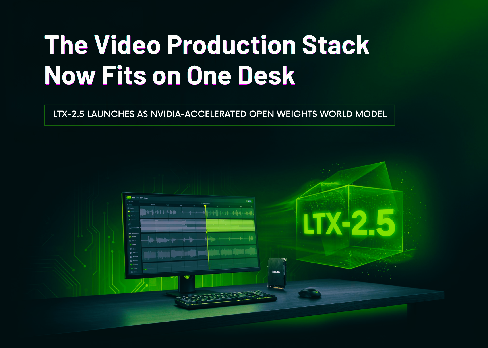

01 프론티어 & 사업 동향
구글, Gemini 3.7 Flash 가격 반으로 낮췄다
“3.7 Flash는 3.6 Flash보다 코드 디버깅과 이슈 해결에서 더 높은 점수를 기록했다.”
Weekly AI Brief
이번 주 AI 업계는 프론티어 모델 가격과 응답 속도를 다시 조정하는 흐름이 두드러졌습니다. 구글은 Gemini 3.7 Flash 가격을 낮췄고, OpenAI는 API에 초고속 추론 모드를 붙였으며, xAI는 Grok 4.6으로 긴 작업 처리에 초점을 맞췄습니다. 오픈 모델 쪽에서는 메타와 Nvidia가 30B급 모델과 라우팅 도구를 내놓아, 기업이 로컬 실행과 여러 모델 조합을 더 쉽게 시험하게 만들었습니다. 연구와 보안에서는 LLM의 추론 흔적 유출, KV 캐시 병목 완화 같은 주제가 같이 떠서, 성능 경쟁이 비용 절감과 보호 문제로 바로 이어지는 국면이 보였습니다. 이번 주에는 모델 성능 경쟁만 볼 게 아니라, API 과금, 로컬 배포, 추론 흔적 보안이 함께 어떻게 바뀌는지 살펴봐야 합니다.

Editor's Pick
번호는 상세 아티클(첨부 이미지) 번호와 동일합니다
01 프론티어 & 사업 동향
“3.7 Flash는 3.6 Flash보다 코드 디버깅과 이슈 해결에서 더 높은 점수를 기록했다.”
02 프론티어 & 사업 동향
“GPT-5.6 Sol on Ultrafast mode answered all 2,500 HLE questions in 11 hours and 11 minutes.”
04 오픈웨이트 & 오픈소스
“It’s small enough to run on a Mac or PC with a single consumer GPU, enabling use cases tha…”
대형 연구소의 모델 공개·프리뷰, 규제/정책, 파트너십 등 산업이 움직인 사건입니다.
01 Google DeepMind Blog 게시일 2026.08.13
“3.7 Flash는 3.6 Flash보다 코드 디버깅과 이슈 해결에서 더 높은 점수를 기록했다.”
 01
0102 cerebras.ai 게시일 2026.08.13
“GPT-5.6 Sol on Ultrafast mode answered all 2,500 HLE questions in 11 hours and 11 minutes.”
 02
0203 xAI 게시일 2026.08.12
“Grok 4.6 is available today in Cursor and Grok Build.”
 03
03오픈웨이트 모델과 GitHub/Hugging Face 생태계에서 주목할 프로젝트입니다.
04 meta.ai 게시일 2026.08.10
“It’s small enough to run on a Mac or PC with a single consumer GPU, enabling use cases that range from local a…”
05 The New Stack 게시일 2026.08.11
“개발자는 모델 풀을 정하고, 품질·지연·비용 기준으로 라우팅 정책을 조정할 수 있다.”
 05
0506 MarkTechPost 게시일 2026.08.11
“10-second clip takes 6.8 seconds on-prem running on 2x NVIDIA GB200 and 23.7 seconds via the LTX API.”

06논문·벤치마크·기법 연구 중 실무 관점에서 볼 만한 결과입니다.
07 arXiv 게시일 2026.08.09
“공개 저장소에서 수집한 315,320 reasoning blocks를 복호화해 367개의 PII와 182개의 자격 증명을 복구했다고 밝혔다.”
 07
0708 arXiv 게시일 2026.08.07
“정확도 손실을 0.7 points 안으로 묶으면서 2,048-token KV budget에서 full attention에 가깝게 유지했다고 밝혔다.”
 08
08개발 도구, 인프라, 보안 이슈 등 바로 써먹거나 조심해야 할 소식입니다.
 09
0910 dealroom.co 게시일 2026.08.07
“개발자는 LLM을 비공개로 디버깅과 리뷰에 쓸 수 있지만, AI가 생성한 결과물은 저장소와 pull request, 다른 프로젝트 채널에 올릴 수 없다.”
 10
10